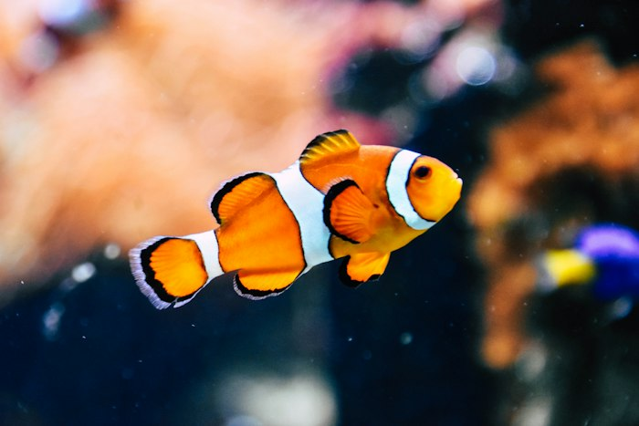
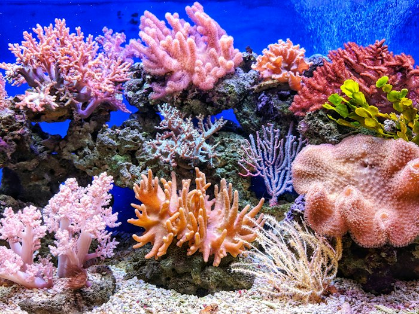

Akvaryum Dünyasına Hoş Geldiniz
Evde tatlı su akvaryumu kurmak isteyenler için hazırladığımız pratik rehber sitemize hoş geldiniz. Yukarıdaki menüden veya aşağıdaki kartlardan merak ettiğiniz konuların detaylı sayfalarına ulaşabilirsiniz.

Balık Türleri
Lepistes, beta, neon tetra, melek balığı, çöpçü ve vatoz gibi popüler tatlı su akvaryum balıkları hakkında tüm detaylar, uyumlu türler ve bakım ipuçları.
Sayfaya Git
Akvaryum Kurulumu
Sıfırdan akvaryum kurma rehberi. Taban kumu seçimi, kök ve kaya dekorasyonu, suyun doldurulması ve en önemli adım olan biyolojik azot döngüsü.
Sayfaya Git
Bakım & Beslenme
Balıkların doğru yemlenmesi, haftalık dip çekimi ile su tazeleme kuralları ve filtre süngeri temizliğinde dikkat edilmesi gereken püf noktalar.
Sayfaya Git
Su & Ekipmanlar
Akvaryum hacmine uygun filtreler, termostatlı ısıtıcılar, aydınlatma süreleri, su kimyası bilgileri ve standart ölçü rehberi.
Sayfaya Git
Sıkça Sorulanlar
Yeni başlayanların en çok merak ettiği sorular: Suyun beyazlaşması, balıkların yüzeyde hava alması, fanus kullanımının zararları ve pratik çözümler.
Sayfaya Git